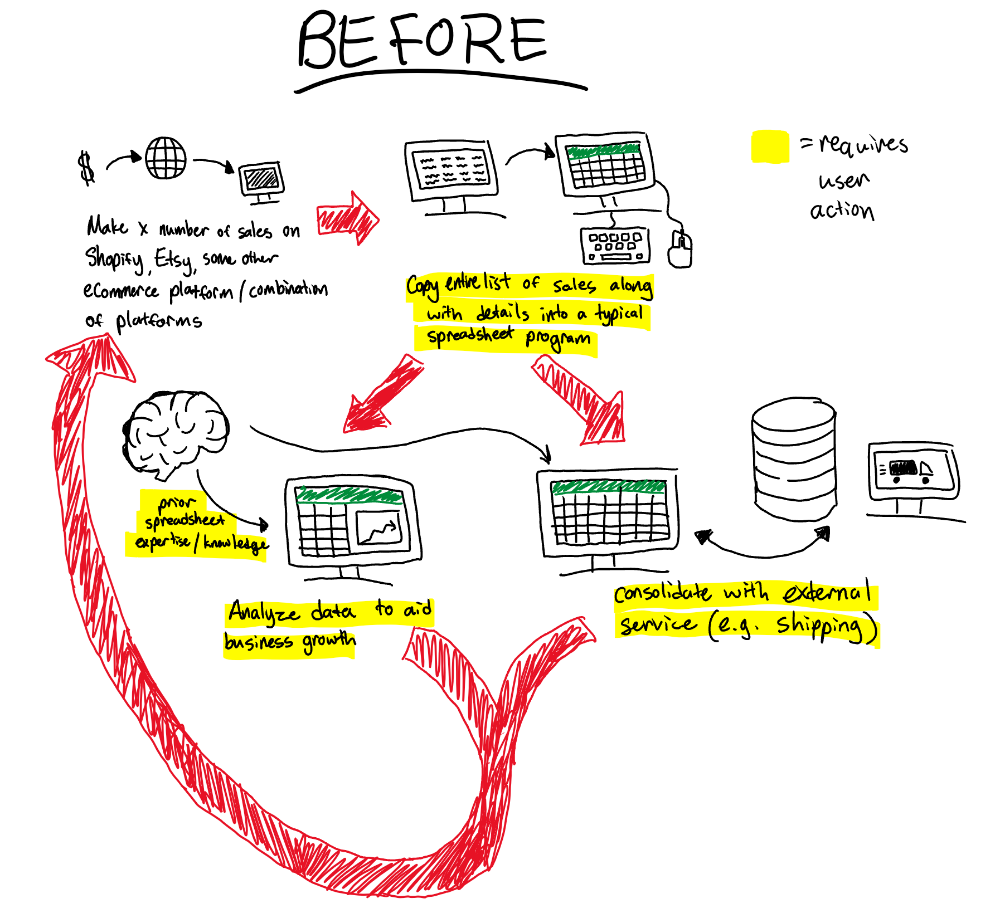
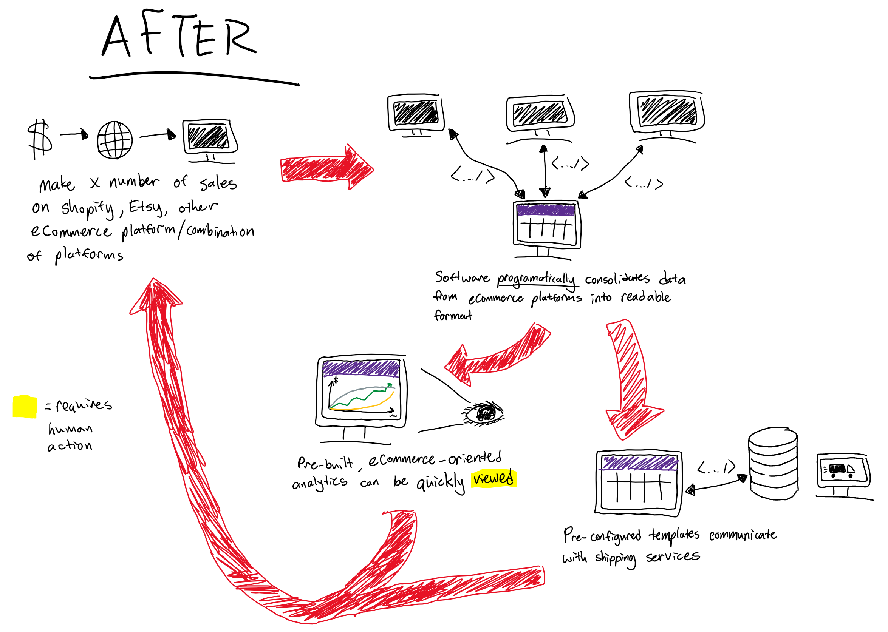
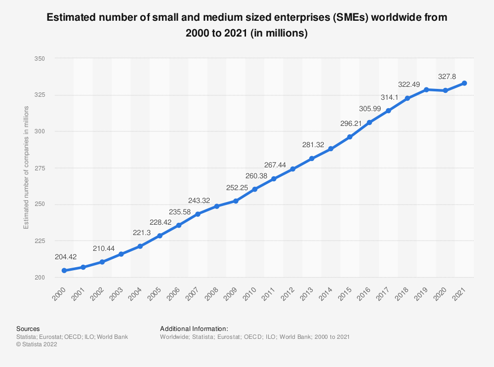
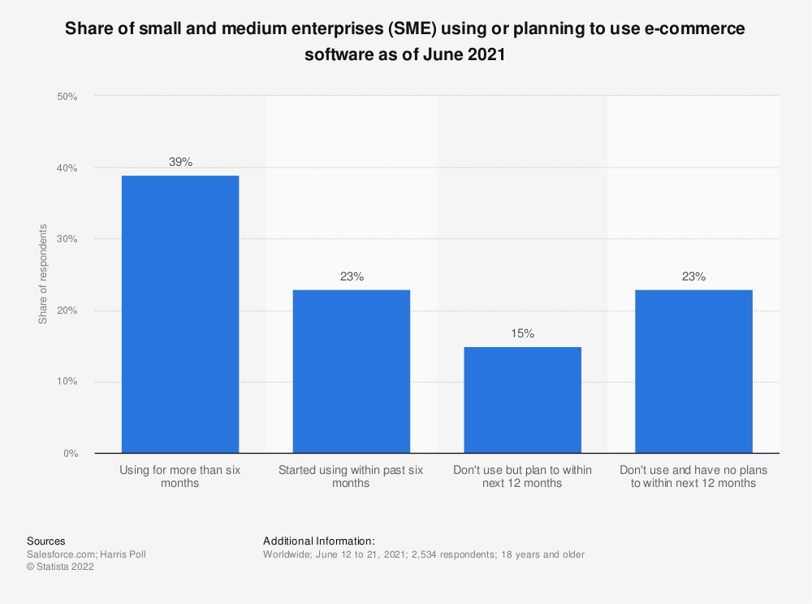
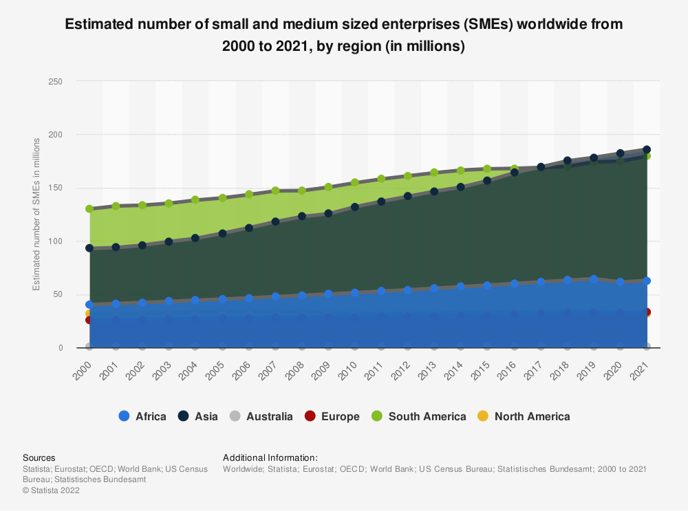
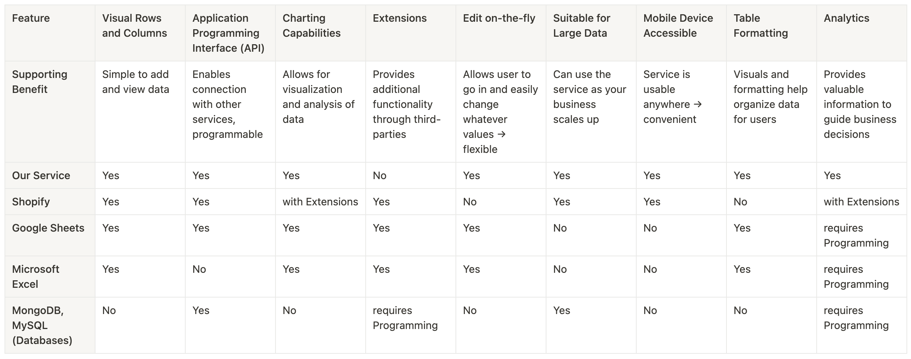
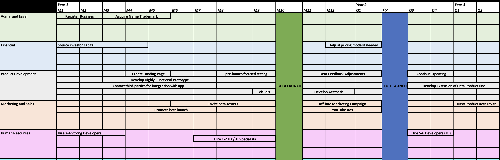

In 1953, the Smithsonian released a report saying that 98% of all of the atoms in your body are replaced each year. Change is a natural part of being human, and essential to becoming successful at anything. This is why it is important to assess who we are in the present, and what we are doing to move forward in our lives. Taking a look at the various surveys about traits associated with successful entrepreneurship as well as managerial skills, I learned about who I am in relation to entrepreneurship.
Starting with the entrepreneurial skills quiz, I scored low in personal background (4/14), better in behaviour patterns (36/46), and a little worse in lifestyle factors (9/14). Broken down into the categories, it appears that my background is not very typical of entrepreneurs, but I make up for it in my behaviours. Because my personal background cannot be changed, I believe my behaviour is the most important factor to focus on; it may be helpful to have the right background, but it is ultimately our actions that shape who we are.
In the managerial skills inventory survey is where I found many actionable goals to strive for. I scored very low in many of the managerial categories due to my lack of experience. But my lack of experience is just that, something I can make up for by getting out into the world and attaining that experience. From now on, I am going to focus much of my efforts in bolstering my lack of managerial skills, especially in sales and marketing.
Victors & Villains
Victors
Yvon Chouinard and Bill Gates are two entrepreneurs that are easy to admire. Yvon Chouinard is known for founding Patagonia, a company that has committed to environmental causes. One of the measures Yvon has taken to help protect the environment was recently donating ownership of the company to a trust and non-profit organization focused on fighting the environmental crisis. Reading up on the way it is being done, they are planning on reinvesting money in the business, saving for unforeseen events, and donating any of the excess to the non-profit. All of this I believe is a brilliant move for keeping the Patagonia brand alive and consistently contributing to the environment.
Bill Gates is most well-known for co-founding Microsoft with Paul Allen. What I admire about Gates was his ability to help bring the world into the age of affordable microprocessors. In the modern day, we are still feeling the effects of his efforts with microprocessors in all of our pockets, many of our wrists, and at home. In addition to his innovative business, he has also committed a large portion of his efforts towards philanthropy and important issues such as malaria and vaccination against polio.
What both of these entrepreneurs have in common was the use of their high levels of wealth and success to do good in the world. Providing value to people through your business is already a good deed but putting forth profits to help solve global issues is something even more admirable. Ultimately, sometime in my entrepreneurial journey, I would want to donate some of my profits to humanitarian and environmental issues as well.
Villains
Tai Lopez, an entrepreneur known for his “Here in my garage” YouTube advertisement, is an entrepreneur who I do not admire. One of his rises to fame and success involves selling online courses, which people often describe as scams. He sells his customers on an unrealistic dream, letting them recognize a problem in their life, but selling a solution that does not solve it. There’s nothing wrong with selling people information that you believe will provide value for them, but there is something wrong with portraying a false image of success and letting people believe that is obtainable, while feeding them poor advice.
Gerald Cotten, the founder of Quadriga Fintech Solutions, is an entrepreneur that I do not admire at all. He set out to build a business where people could freely trade the hot, new commodity at the time, cryptocurrency. And while it did initially provide the value it intended to provide, Cotton had violated the trust of his many customers and used millions of dollars pulled directly from customers’ accounts to fund his personal habits.
Both of these entrepreneurs have a lack of respect for their customers, with personal wealth as the be-all and end-all of their venture. To me, one of the most important aspects of my entrepreneurial journey is to provide real value to people, rather than tricking people into believing that I am providing them with value. I would rather not sell people on an unobtainable dream, nor would I take money right out of the pockets of the customers who so trusted me with it.
Entrepreneurial Motives
In life, all we really have is time. So why do we willingly give so much of it, generating more revenue for someone else than we are being paid? Working to live and living to work is a troubling concept for my own future. I understand why many people seek entrepreneurship as an escape for this reality. Others also seek entrepreneurship for other reasons: Control, Freedom, Impact, Wealth. For me personally, the order of importance from highest to lowest is the following: Wealth, Freedom, Impact, Control.
Profits and wealth often take the front stage when one speaks about becoming an entrepreneur. There are many different reasons as to why one might value wealth above the other three aspects listed above. Some may have grown up poor and do not want that for their children, some may want to take care of their parents, some may want to travel and enjoy the finer things in life. I personally value money in the sense that it can buy you freedom and time, as well as freedom for others. My parents have worked hard to provide me with a better life, and repaying the favour is one of my main motivations. With this vision of wealth in mind, growth and scaling will be important foci in the early stages of the business.
Given that I also desire the ability to create my own work culture and define my own working hours, the goal for the business is to have a small, tight-knit team doing the day-to-day maintenance work. The leveraging of others’ time will be one of the most useful concepts for achieving this level of freedom.
Impact and control take on a lower priority for me, but they still carry some value in how I am going to run my business in the future. Impact will have a greater importance to me once the business has met its goals in terms of wealth; ultimately, if money were no object, I would want to have a positive impact on the world. Control, to me, takes the lowest precedence out of all the categories. This is because I would ideally have chosen the right employees that I can trust to grow the business and keep it successful. Control might be important to me in the early stages of business, but I believe I will eventually have no problem handing over control to someone that has the capability of making good decisions for the business.
Guest Speaker Sheet
Speaker Facts
Fraser Pogue began as a science student with a major in Computer Science. He then returned years later to UBC’s Sauder School of Business and completed an MBA. Almost immediately after, Pogue founded Fraser Instruments Ltd., a company focused on creating a product to help skiers in the backcountry evaluate the safety of a snowpack in relation to avalanches. Afterwards, he co-founded another company called Popul8 Analytics, which dealt with worksite imaging. Some of Pogue’s other experiences involved working at UBC, most notably as an Adjunct professor with the Sauder School of Business, and a CORE incubator lead for entrepreneurship@UBC.
Questions for Fraser
Have you ever faced negative judgement from others (could be friends or family) for becoming an entrepreneur? If yes, how did you deal with it? If not, how would you suggest an up-and-coming entrepreneur deal with such a thing?
Impostor Syndrome is a common theme I see among entrepreneurs who experience success for the first time. Have you ever dealt with feeling like your skills/knowledge are not deserving of any success you are experiencing?
Would you recommend reading classic business books such as “The 4-Hour Workweek”, “The E Myth”, “Atomic Habits”, or do you feel like books such as the ones listed are just gimmicks that distract from real learning?
Something surprising I heard from Fraser
Something surprising that I heard from Fraser’s presentation was about standing out above the competition. Fraser’s presentation involved videos depicting very captivating situations; some of them involved skiers being trapped under an avalanche, some of the videos depicted cannons blasting mountain sides to intentionally trigger avalanches. All of the videos were very captivating, and even that can take precedence over issues that may be more important or impactful in some way.
Entrepreneurial Take-away Lessons
One of the important lessons I took away from Fraser’s presentation was to think about your target market size. Expect to capture only a small portion of your market and ask yourself, can you still succeed?
Another lesson I took away from Fraser’s presentation is the concept of pushing vs. pulling in entrepreneurship. Pushing involves creating some kind of innovation and searching for customers to sell this innovation to. Pulling involves studying a known problem and creating a solution to overcome it.
I also learned that a key skill of an entrepreneur is finding people who can fill in the gaps of your own knowledge. Something you can do is talk to people who can advise you on topics that are important to your business. This is useful because entrepreneurs do not have the time to devote years of research to a specific topic area, but people that have done that very thing can be accessible.
Taking Risks
Out of the many definitions from different dictionaries, the one idea that entrepreneurship seems to share amongst these definitions is the element of risk. Given this seeming importance, being able to take risks and manage risk is an essential part of becoming an entrepreneur. My scores for each category (out of 25) are as follows: 17 for Financial, 21 for Intellectual, 19 for Social, 11 for Physical, 18 for Cultural. My total risk-taking score is 96 out of 125, or 77%.
Out of the five categories of risk-taking above, it appears that I am the most willing to take risks intellectually and socially. To me, this means that I am not afraid to challenge existing ideas in favour of something new that I believe in. In the field of computer programming and software, which is what my main degree is focused on, change and new ideas come often. Creating something truly new and being able to convince others that what you have created is better than what is already out there is the essence of success in the field.
With lower scores in the categories of physical and financial risk taking, the precautions that I will be taking are to take care of my body (like seeking fewer adrenaline-inducing activities), and I will be ensuring that risk taking will not put me in financial ruin. There are two ends of a spectrum when it comes to financial risk taking: you have one end where you keep all your money sitting in a savings account, leaving all of that money to return essentially nothing. You then have the other end of the spectrum where you take your parents’ entire retirement fund and put it into biotech stocks. This is why financial risk management is so important; you have to find a balance where you can achieve an adequate return with a reasonable amount of risk.
It is clear to me that risk is essential for entrepreneurship in general, and it is also clear to me how my comfort with risk-taking varies between different categories: financial, intellectual, social, physical, and cultural. Given that I did not achieve a full score, I will not be putting my entire life on the line for an entrepreneurial venture, but I am prepared to take the risk to challenge the existing market; finding opportunities that others turned away from and succeeding.
As I pursue a degree in Computer Science, I find it difficult to turn away from a potential $200,000 per year starting compensation to take on an uncertain means of making a living. The reality here is that I will most likely become a full-time employee, while pursuing entrepreneurial ventures in my time away from work. Despite this, I am prepared to jump ship and dive into a venture if it starts to become something that will benefit me more than that high paying job. Overall, on my entrepreneurial path, I do not need certainty to carry me forward, but I will need conviction on the risks I take. This is something that I will have to build up on my own.
Entrepreneurial Stressors
My top five chosen stressors from the list of common entrepreneurial stressors are as follows:
Losing the security of a steady job paycheque
Neglecting family and friends
Failing
Worrying about running out of money
Hiring and overseeing staff
What do your top five stressors have in common?
My top five stressors are almost all fundamentally about the success and uncertainty of the venture. To elaborate, I will not stress about the loss of a steady job paycheque if I can easily sustain myself with the venture. I will not neglect my family and friends if I do well enough to think about taking a break often. The stress of failing is tied with the uncertainty of sustained success. The worry of running out of money would come from a lack of cash reserves, which can be built through success. And finally, hiring and overseeing staff can be stressful due to the importance of employees in building a successful, scalable business. All of this is to say that there is a level of uncertainty that underlies each of these stressors, which comes with the nature of entrepreneurial ventures.
What does your stressor picture indicate for how you will structure your business and entrepreneurial lifestyle?
Initially, I will likely be structuring my businesses around lower levels of commitment, keeping a full-time job while starting any entrepreneurial ventures. Any ventures will likely begin with me putting in work as an individual, dedicating only my own time and potentially money first. Only once I believe that it is worth pursuing, I will feel more comfortable bringing in other people for their time and money. However, I will say that it is entirely possible that, with enough conviction, I am willing to dive in head-first on a venture I truly believe in.
Testing Ideas
Day in the Life


Elevator Pitch
Time is all we have. So why should we spend it all staring at a spreadsheet, and trying to understand advanced formulas and a programming language. Storing data and processing it is integral to every type of business, and we want to bring a powerful new way to do it, without all the complexity.
We are building a cell-based data storage and analytics solution. Think spreadsheets but catered towards the business-oriented. This includes your up and coming entrepreneur re-selling vintage clothing, your auntie selling handmade jewelry online, and the fresh-out-of-college freelance software developer.
The issue with existing solutions for your entrepreneurs are that they need extensive technical knowledge or they need to contract someone with the knowledge to reap the benefits of some important business features. We allow these entrepreneurs to do it themselves, without all the headache.
HomeBase, spreadsheets made simple yet powerful.
Market Definition & Sizing
Total Available Market
In our estimate, we are taking into account the fact that if you are a big business, you likely have some other formal big database with software engineers and data scientists managing it. In estimating how many people might want/need the product, we are considering many types of small businesses instead. These are referred to as SMEs (small and medium sized enterprises). And the global figure is 332.99 million as of 2021.

If we are assuming everyone buys the product, we can establish the size of our total addressable market in dollars with a figure of $3.995 billion monthly (with a subscription of $12/month).
Served Available Market
How many people actually need or can use my product? How many people have the money to?
Considering that small businesses are generally prepared to take on costs, and the cost to distribute a SaaS product is cheap, determining how many people actually need or can use the product is the key to finding the Served Available Market (SAM). If we refer back to the table above, there are many industries that we can likely rule out of using our service.
Then we need to estimate, out of those industries who actually needs the product; we can obtain an estimate by taking a look at the share of SMEs currently using e-commerce software worldwide.

We can see that 62% of respondents are currently using e-commerce software. Since our product is complementary to the usage of e-commerce software, we can narrow down the market size to $2.476 billion per month.
Serviceable & Obtainable Market
For our SOM, we have to figure out who we are going to sell to in the very near future, getting down to the details about who we are actually going to sell to. This is likely going to consist of those whom we can reach with online advertisements and any small businesses we can reach out to. For the 1st year, we will likely target the mainly English speaking North America, which has a figure of 31.85 million SMEs. The target for market share we would like to achieve is 2%; that is, 2 out of every 100 small and medium sized businesses in North America will be using our product. This equates to a SOM figure of $7.64 million per month (again using the $12/month subscription figure).

Competitive Analysis

Building Your Prototype
First Name
Last Name
Subtotal
Quantity
The specific elements of our idea we will be testing in the prototype will be the addition of rows via an external service, as this brings the “Home” part to “Homebase”. One of our most important features will be integration with external services adding data to a familiar cell-based (spreadsheet) editor. Thus, the features that we are going to have in our prototype will consist of editable cells, and a fake “external service” to update our cells from.
We can build our prototype exclusively using web technologies such as HTML, CSS, and JavaScript. Alternatively, we can also make a good-looking mock-up using a tool known as Figma. For the purposes of embedding an interactive prototype in this portfolio, we are going to be using web technologies.
Building it Out
Messaging Architecture
At our foundation, our compentencies lie in coding for the user experience, pushing innovative features in the data storage space, and storing data reliably. These competencies are all essential if we want to disrupt the status quo of spreadsheets and traditional databases; we must be competent at the important, traditional aspects of data, such as reliability, as well as adding innovative features that bring a fresh breath of air to the space.
Above that, we have certain values that will guide how we use these competencies to achieve our goals. One thing that we value is ease of use for our users and simplicity. We care about bringing the same powerful features existing solutions provide without having the learning curve of driving a stick-shift. Another value that we keep for our company is the culture for our workers. We want to avoid leaving our workers overworked, stressed, and lacking in time. We want them to have freedom and dignity in the workplace and produce work of the utmost quality because of it.
As time goes on and our company gains some traction, experiences growth, failures, successes, we will want to have established ourselves as a stand-out product. One vision that we have is to be a leader in the data storage space, with a full line of software tools that are suited to both small business data and enterprise big business data. We could also see ourselves as a part of a merger-acquisition, being an extension of office suite products such as Google Sheets or Microsoft Excel.
The reason for our existence is simple: make a product that has the same utility as spreadsheets, yet has a far more simplistic usage. We want to help people save time and be able to direct that saved time to empowering their own businesses. To us, this is the best possible outcome: creating value by helping a diverse amount of people create their value. We also want to eventually make our tool as accessible as a product such as Google Sheets might be and potentially become a defacto solution.
To achieve our goals we need a strategy. Being a SaaS (Software-as-a-Service) company, one of our key priorities is going to be growth; we want to attain a sizeable customer base. We will be going with a growth-at-all-costs approach early on. Eventually we will be able to turn a profit with a customer base that enjoys our service and will use it over alternatives.
Naming Your Business & Your Brand
Naming
In list form, here are the names we were considering:
Homebase
Castle
Supercell
The name that seems the most risky is Supercell. Although it uses the same “cell” pun as Microsoft Excel, there are some issues with it. In addition to being the name of an existing popular mobile game company, it is also the name of a thunderstorm. Generally, people do not associate thunderstorms with reliability and data storage.
Our chosen name, Homebase, seems to fill most of the requirements listed above. It is between 5-10 letters, we have at least one hard consonant (the 'b'), it is a common word (might not be too recognizable), and it is not too long or confusing.
Our Brand
What are we?
Homebase is a cell-based editor that is built to connect the data between various eCommerce services to provide an experience that is far less tedious than traditional spreadsheets. Our service not only stores data, but can visualize it in graphs, perform analytics, and is a fantastic service for growing your business.
Why?
Ultimately we want people who don’t have the technical know-how or the time to learn advanced spreadsheet manipulation to have the same access to powerful business tools that empower the growth of their venture. We believe that power and simplicity do not have to be mutually exclusive ideas when it comes to using software.
How?
Homebase takes the complexity and tedium out of tasks by providing the user with built-in powerful tooling. We, the experts, take on the complexity while the user enjoys the utility.
Go To Market Plan
Business Model
Our business is going to use a Software-as-a-Service (SaaS), freemium model. The premium services in this model will be a tiered subscription. We are choosing to use this business model because our customers can differ significantly in terms of scale and therefore, their needs for our services will differ significantly as well. This increases the accessibility of our tool and usage throughout our target market. One business that is similar, Shopify, also uses a tiered subscription model, but without a free tier.
Our sales channels will be almost exclusively online, with no physical locations. One sales channel we are going to be using is a direct-to-consumer online website. Being a SaaS product, there is nothing physical to distribute. Thus, the simplest sales channel will be access to the service through a web application. In terms of intermediaries, we will likely only have a free companion app on the Google Play Store for Android and the App Store for iOS.
Marketing Strategy
For marketing strategies, we will be reaching customers through mostly online methods. Social media will be an important part of our total strategy, as technologically inclined users (entrepreneurs who are likely to use e-commerce software) will likely be using social media. We will run YouTube ads on channels related to entrepreneurship and productivity. We will also be interested in running YouTube ads on channels related to Excel/Spreadsheet tutorials to try and capture more people experiencing the problem we are trying to solve.
Corporate Roadmap

Midterm Reflection
After compleing the Founder’s Dilemma survey, I found that I was generally split between choice 1 and choice 2. This implies that have not yet committed to relinquishing control to pursue value, or I have not yet given up quick growth and high wealth in order to keep control of my business. When I began this course, I was expecting to pursue entrepreneurship in the hopes that I would be able to run a small team of people and provide myself with a supplemental income on top of my day-job. But a wise COMM 280 professor once said, a business is like the hungriest baby you could ever have. Now I’m thinking of entrepreneurship in a more hands-on way.
After going through approximately half of the course so far, my scores on the “Build Your Dreams” surveys have gone rather unchanged. However, I am starting to grasp the idea of not having the ideal entrepreneurial background, but succeeding in spite of it. In terms of my motives, they also seem relatively unchanged. After completing the Founder’s Dilemma Survey, I determined that I was on the “buildng wealth” side of things, rather than the “control” side of things, which matches up with the motives I defined earlier on in the term.
For my risk profile, I continue to agree with what I put earlier in the term. I listed intellectual risk taking as the type of risk I was most tolerant to, and I believe it matches up with my business idea: a web application to shake up the status quo of the spreadsheet space.
As for stressors, I feel that I am beginning to worry less about the uncertainty that entrepreneurship brings. Where that worry gets transferred over to, is the worry of time. I am slowly beginning to understand better the time commitment that is required for a good entrepreneur venture to thrive and I have the concern that putting in this time will lead me away from my friends and family. At the end of the day, we are humans first and business machines second.